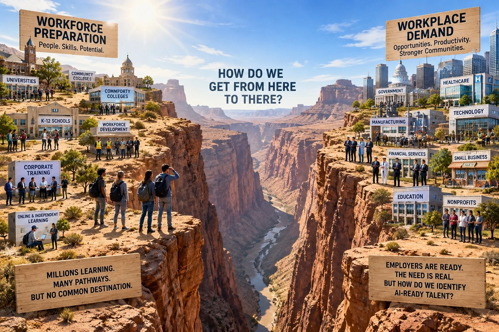

Accelerating the AI-Ready Workforce
How a Universal AI Certification Bridges Workforce Preparation and Workplace Demand
AI is creating two powerful movements at once. Schools, colleges, workforce programs, employers, technology companies, and independent educators are rapidly developing ways to prepare people for AI-enabled work. At the same time, workplaces increasingly want AI-capable people—not simply AI specialists, but people across nearly every occupation. What is missing is a common, trusted definition of foundational AI readiness. A universal certification can provide that bridge, accelerating both the formalization of AI preparation and the deployment of AI-capable people into the workplace.
![A deep canyon divides two plateaus. On the left, labeled Workforce Preparation, are universities, community colleges, K-12 schools, workforce development, corporate training and online learning, with a sign reading "Millions learning. Many pathways. But no common destination." On the right, labeled Workplace Demand, are government, healthcare, manufacturing, technology, financial services, small business, education and nonprofits, with a sign reading "Employers are ready. The need is real. But how do we identify AI-ready talent?" Between them: "How do we get from here to there?"](../assets/canyon-gap.webp)
Today, many pathways are emerging, but there is no common destination. An employer may know that a registrar, technician, teacher, paralegal, or administrative professional could become substantially more productive with AI, while having no consistent way to describe, request, or verify that capability. Likewise, educators and training organizations are building programs without a common answer to a fundamental question: What does it mean for someone to be AI-ready?
This is precisely the kind of problem certification has historically helped solve. Certification translates preparation into demonstrated capability—giving educators something concrete to prepare toward, individuals portable evidence of what they can do, and workplaces a trusted signal they can recognize when hiring, upskilling, developing, or deploying people.
The existence of that common destination can accelerate the entire system. Universities, community colleges, employers, workforce programs, independent educators, and entrepreneurs can each develop different ways of preparing people to reach it. New training programs and businesses can form around it. The power of a universal certification is not that everyone takes the same path. It is that different paths can lead to a common, trusted destination.
This is where NOCTI brings a unique capability. For roughly six decades, NOCTI has worked at the intersection of workplace requirements, competency definition, skills verification, assessment, and credentialing. AI represents a new capability domain, but translating emerging workplace requirements into verifiable human capability is not a new problem for NOCTI.

With a foundational AI-readiness certification in place, the preparation ecosystem gains a destination, people gain portable evidence of capability, and workplaces gain a trusted baseline they can recognize and request. Different preparation pathways can converge on that common crossing point and then fan outward again into different occupations, industries, employers, advanced skills, and career opportunities.
A universal AI certification can therefore do more than measure readiness. It can accelerate it—helping turn today’s rapidly expanding AI education and training movement into an increasingly capable, recognizable, and deployable AI-ready workforce.